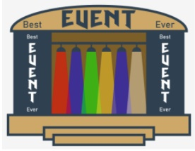

- перемалюйте кнопку, щоб відобразити клацання (наприклад, щоб показати, що воно дійсно натиснута)
- викликати функцію.
У парадигмі, керованій подією, наші обов'язки виглядають зовсім інакше:
- контролер події виявляє кліки самостійно;
- він самостійно визначає ціль клацання;
- він самостійно викликає бажану функцію;
- всі ці дії відбуваються за лаштунками! Дійсно!
Звучить добре?

Події
Ви помітили? Ми мовчки ввели нове слово в нашу дискусію. Це подія. Що це? А точніше, що це могло бути? Існує низка подій, які контролер подій зобов'язаний розпізнавати, виявляти та обслуговувати. Ось деякі з них:
- натискання кнопки миші;
- відпускаюння кнопки миші;
- переміщення курсору миші;
- перетягування чогось під курсором миші;
- натискання та відпускання клавіші;
- торкання екрана;
- відстеження проходження часу;
- моніторинг зміни стану віджета;
- і багато, багато іншого …